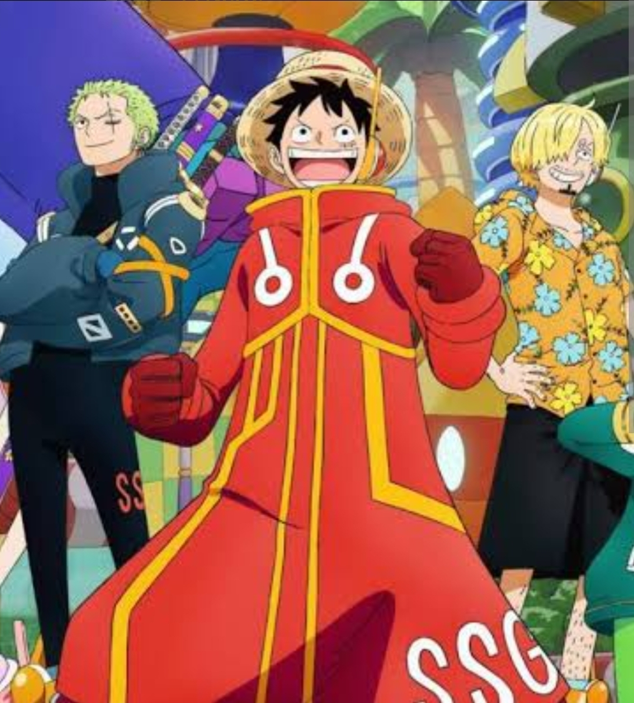

One Piece: Gaban enfrenta Imu e novos spoilers do capítulo 1191 agitam os fãs

🔥 Gaban entra na luta contra Imu
O arco de Elbaf está ficando cada vez mais intenso. No capítulo 1190 de One Piece, Scopper Gaban, antigo membro da tripulação de Gol D. Roger, entra na batalha para proteger Luffy de Imu.
Antes de enfrentar Imu, Gaban conversa com Luffy e reforça que o caminho para se tornar o Rei dos Piratas não será fácil. Para alcançar o One Piece, Luffy terá que enfrentar inimigos cada vez mais poderosos.
⚔️ Gaban mostra o poder da antiga geração
Mesmo sendo muito mais velho, Gaban demonstra que ainda possui um poder gigantesco. O antigo companheiro de Roger consegue enfrentar Imu e utilizar seu Haki para causar danos ao inimigo.
A batalha acaba levando os dois para o Submundo de Elbaf, aumentando ainda mais a tensão do confronto.
Durante a luta, Gaban acaba sofrendo uma consequência extremamente grave e perde o braço esquerdo.
😱 O sacrifício lembra Shanks
O acontecimento chamou a atenção dos fãs porque lembra diretamente o sacrifício de Shanks no começo da história.
Assim como Shanks perdeu o braço enquanto protegia Luffy quando ele ainda era criança, Gaban também sacrifica seu braço enquanto protege o futuro Rei dos Piratas.
⚠️ Spoilers do capítulo 1191
Os spoilers divulgados para o capítulo 1191 indicam que o confronto em Elbaf ficará ainda mais perigoso.
Imu deverá revelar uma nova transformação.